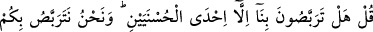
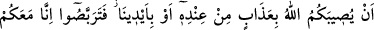
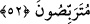

söylenmesi emredilen şeylere dâhildir. Âyetin bu kısmının, Allah Teâlâ tarafından
söylenen yeni bir cümle olması da mümkündür.
Tevekkül, gerekli tedbirleri aldıktan sonra işi Allah Teâlâ’ya havâle etmek ve O’nun
yaptığına râzı olmaktır. İsterse bu normal tedbirleri yerine getirdikten sonra olsun. Kula
düşen Mevlâsı’na tevekkül etmek, O’nun rızâsını istemek ve Allah’ın takdir ettiği
şeylerin dışında hiçbir şeyin kendisine isabet etmeyeceğine inanmaktır.
Hâfız şöyle der:
Pîrimiz dedi: Yaratılış kaleminde hata yoktur
Hataları örten temiz nazarına âferin!
Bir hadiste şöyle buyurulmuştur: “Kul, başına gelecek bir musîbetin asla
şaşırmayacağını, başına gelmeyecek bir musibetin de asla gelmeyeceğini bilmedikçe
imanın hakîkatına ulaşamaz.”[168]
52. De ki: “Siz bizim hakkımızda ancak iki iyilikten birisini beklemiyor musunuz?
Ama biz, Allah’ın size ya kendi tarafından veya bizim ellerimizle bir azab
ulaştırmasını bekliyoruz. Haydi bekleyin, biz de sizinle beraber beklemekteyiz.”
Münâfıklara “de ki: Siz bizim hakkımızda ancak iki iyilikten” her biri güzel âkıbet
olan zafer ve şehidlikten “birisini beklemiyor musunuz?” yani bunu bekliyorsunuz.
Âyetteki ifadenin bu şekilde gelmesi, bir nevi birinci cevapta mübhem bırakılan hususu
beyan etmektedir. Münâfıkların müslümanlar için zarar gördükleri şehidliğin, menfaat
saydıkları zafer ve ganimetten daha faydalı olduğunu bildirmek suretiyle gerçek durumu
ortaya koymaktır. Yani siz ancak bizim başımıza gelen en güzel âkıbete (şehid
olmamıza) ve kendinizin bundan mahrum kalmanıza seviniyorsunuz. Dolayısıyla siz
nerede, iddia ettiğiniz gibi teyakkuz (uyanıklık), ihtiyat ve akılla hareket etmek nerede?!
Bir hadiste şöyle buyurulmuştur: “Allah, kendi yolunda (cihad etmek için) çıkan ve
bunu da yalnızca Allah’a olan îmânı ve Rasûlü’nü tasdikden dolayı yapan kimseye,
cennete girmeyi veya çıkmış olduğu evine ecir ya da ganîmete nâil olmuş olarak geri
dönmeyi garanti eder.”[169]
Devlet şayet yardım ederse, eteğini tutarım
İster neşe, eğlence tarafına çeksin, ister şeref ve yüceliğe